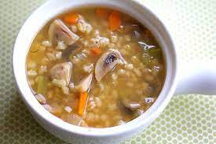

Mushroom Barley Soup

A classic soup experience!
This is one of those comfort foods that everyone wants
on those cold fall evenings. The thick creamy broth with
soft chunks of vegetables and rich chewy mushrooms...
Who can resist a bowl of this soup?
Ingredients
- 2 onions, minced
- 8 oz sliced mushrooms
- 3 tablespoons oil
- 2 tablespoons flour
- 8 cups water
- 2/3 cup barley
- 1 stalk celery, diced
- 1 carrot, diced
- 3/4 tablespoon salt
- 1/4 teaspoon pepper
Steps
- Heat oil in large pot. Add onions and mushrooms
and saute until soft.
- Add flour. Stir until smooth. Gradually add water.
- When water boils, add barley, celery, carrot,
and spices.
- Cook covered on medium-low flame for 1-2 hours.
Back To Top
Home